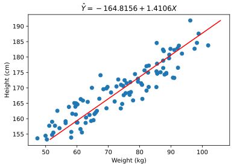
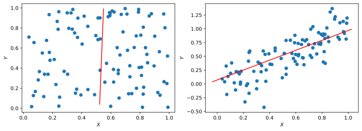
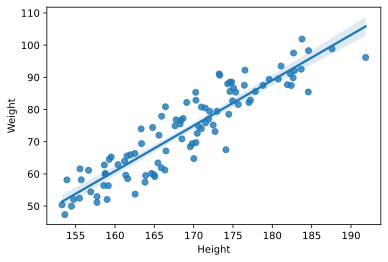

Gender Height Weight
0 Female 174.47 78.52
1 Male 174.83 88.52
2 Male 168.65 77.21
3 Male 182.70 97.54
4 Male 170.29 82.88Linear regression is a technique in statistics, data science and machine learning that measures the relationship between two variables. This technique allows us to determine which linear model is “best fit” and therefore is best at explaining the relationship between the input (independent) variable \(X\) and the output (dependent) variabele \(Y\).
\[\hat{Y} = \alpha + \beta X\]
In more detail, \(\alpha\) (alpha) is the intercept is the value of \(\hat{Y}\) where \(X = 0\), so the expected value of \(Y\) when \(X = 0\). \(\beta\) (beta) is the slope and it represents the change in \(\hat{Y}\) for a unit of change in \(X\), the expected chang in \(Y\) for a unit change in \(X\).
However, the equation only describes the best fit line, it does not fully quantify the relationship \(Y\) and \(X\). We still need to account for the estimation error.
\[\hat{Y} = \alpha + \beta X + \hat{\epsilon}\]
In the population regression equation, the \(\epsilon\) term represents a vector of errors. In our regression model it represents a vector of residuals. The errors, \(\epsilon\) are unknown parameters, so we must estiamte them.
As an example we like to analyze if there is relationship between a persons height and weight. Or more preciesliy we want to know if wheight varies as a function of how height varies. We’ll take both meaturements and regress them against each other.
The python library scikit-learn has a built-in linear regression model. Note however that this linear regression can fit on every data even when linear relation is present. Therefore always analyze your data and model.
Code
# Set variables
X = data[["Height"]]
Y = data["Weight"]
# Fit the model to the data
model = LinearRegression()
model.fit(X, Y)
# Extract the linear model parameters
intercept = model.intercept_
slope = model.coef_[0];\[\hat{Y} = -164.8156 + 1.4106X\]
Eacht dot on the below graph represents a measurement with on x-coordinate a weight measurement and on the y-coordinage a height measurement. The best fit line tells us that for every centimeter increase in height we see an increase in of \(1.4\) kilogram in weight. This expressed by the \(\beta\) parameter, which is estimated as \(1.4106\).
Code
# Use the model to make predictions
y_pred = model.predict(X)
fig = plt.figure(figsize=(6, 4))
plt.scatter(data["Weight"], data["Height"])
plt.plot(y_pred, data["Height"], color="red")
plt.title(fr"$\hatY = {intercept:.4f} + {slope:.4f}X$")
plt.xlabel("Weight (kg)")
plt.ylabel("Height (cm)");
- Linear regression gives us a specific linear model, but is limited to cases of linear dependence.
- Correlation is general to linear and non-linear dependencies, but doesn’t give us an actual model.
- Both are measures of covariance.
- Linear regression can give us relationship between Y and many independent variables by making X multidimensional.
It is very important to keep in mind that all \(\alpha\) and \(\beta\) parameters estimated by linear regression are just that - estimates. You can never know the underlying true parameters unless you know the physical process producing the data. The parameters you estimate today may not be the same analysis done including tomorrow’s data, and the underlying true parameters may be moving. As such it is very important when doing actual analysis to pay attention to the standard error of the parameter estimates. More material on the standard error will be presented in a later lecture. One way to get a sense of how stable your parameter estimates are is to estimate them using a rolling window of data and see how much variance there is in the estimates.
Code
X = np.random.rand(100).reshape(-1, 1)
Y = np.random.rand(100)
model.fit(X, Y)
y_pred = model.predict(X)
fig, ax = plt.subplots(ncols=2, figsize=(12, 4))
ax[0].scatter(X, Y)
ax[0].plot(y_pred, X, color="red")
ax[0].set_xlabel(r"$X$")
ax[0].set_ylabel(r"$Y$")
Y = X.flatten() + 0.2 * np.random.randn(100)
model.fit(X, Y)
y_pred = model.predict(X)
ax[1].scatter(X, Y)
ax[1].plot(y_pred, X, color="red")
ax[1].set_xlabel(r"$X$")
ax[1].set_ylabel(r"$Y$");
Now let’s see what happens if we regress two purely random variables.
The above shows a fairly uniform cloud of points. It is important to note that even with 2500 samples, the line has a visible slope due to random chance. This is why it is crucial that you use statistical tests and not visualizations to verify your results.
Now let’s make Y dependent on X plus some random noise.
In a situation like the above, the line of best fit does indeed model the dependent variable \(Y\) quite well (with a high \(R^{2}\) value).
The regression model relies on several assumptions:
The independent variable is not random. The variance of the error term is constant across observations. This is important for evaluating the goodness of the fit. The errors are not autocorrelated. The Durbin-Watson statistic detects this; if it is close to 2, there is no autocorrelation. The errors are normally distributed. If this does not hold, we cannot use some of the statistics, such as the F-test. If we confirm that the necessary assumptions of the regression model are satisfied, we can safely use the statistics reported to analyze the fit. For example, the \(R^{2}\) value tells us the fraction of the total variation of \(Y\) that is explained by the model.
When making a prediction based on the model, it’s useful to report not only a single value but a confidence interval. The linear regression reports 95% confidence intervals for the regression parameters, and we can visualize what this means using the seaborn library, which plots the regression line and highlights the 95% (by default) confidence interval for the regression line:
Code
X = data[["Height"]]
Y = data["Weight"]
fig = plt.figure(figsize=(6, 4))
sns.regplot(x=X, y=Y);